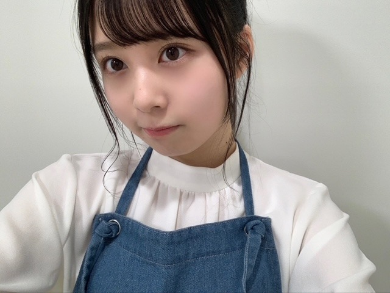
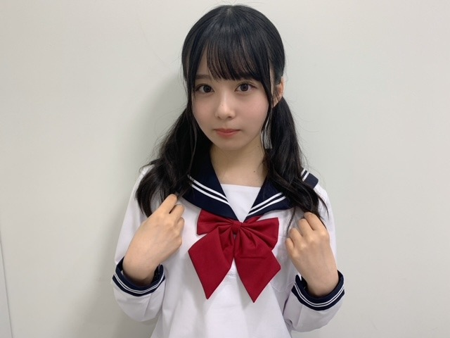
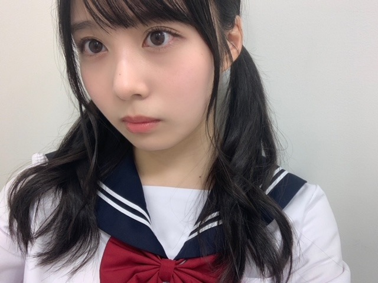
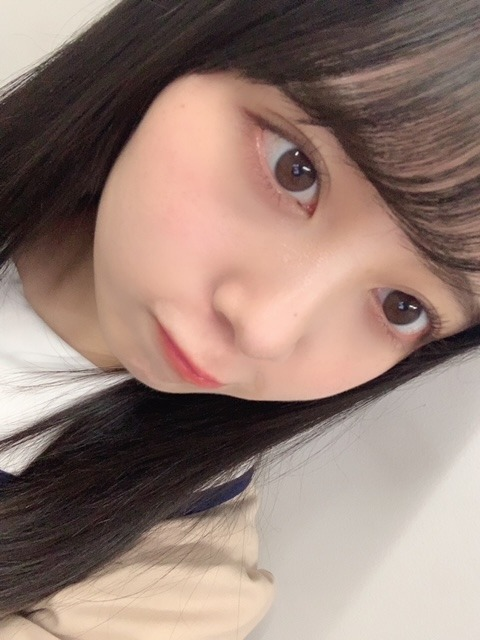
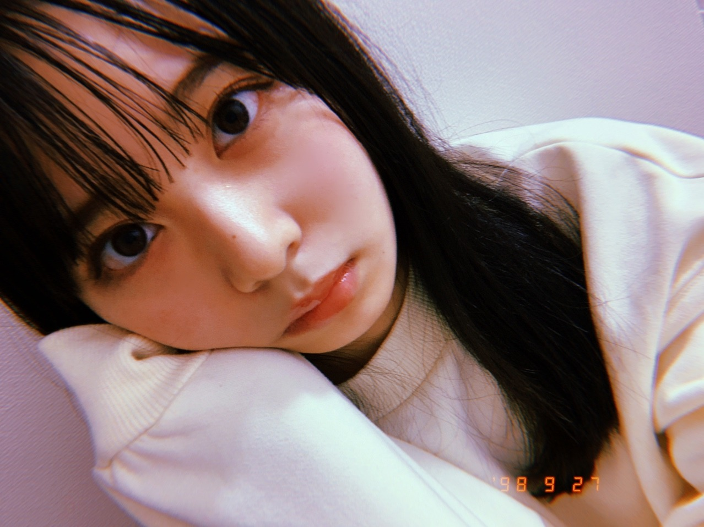
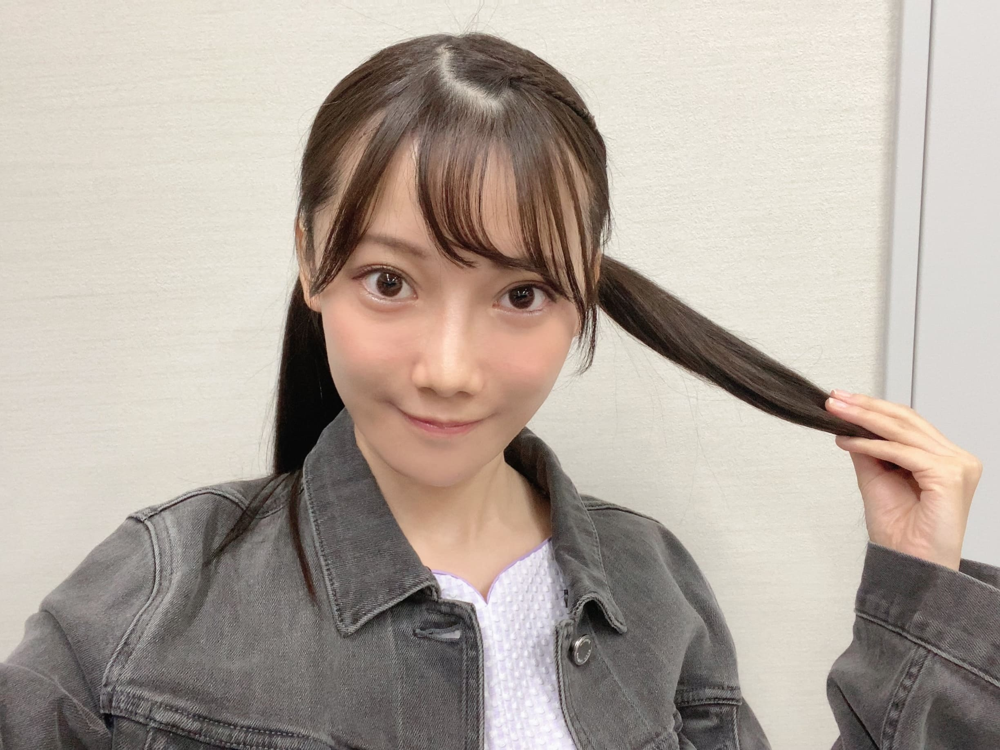

2020/1016Friお疲れ様です。林瑠奈です。
乃木坂46、4期生の林瑠奈です。
神奈川県出身高校2年生17歳
華咲くセブンのティーンの林瑠奈です。
負けるなしょげるな林瑠奈、今日も1日頑張るな
(ピンポーン)
ありがたくも、以前より近くでお姿を見させていただけるようになった今でも、
水面に絵具を垂らしたときみたいに、一瞬で今までの色を変える。
臓器に直接染みていく、
鼓膜心臓神経にこれでもかというくらいに響く。
未央奈さんという芸術はわたしにとってそれだけの影響力を持っています。
だからこそ、未央奈さんのような人になりたいと思うし
でも未央奈さんのような人になったら、
今のこの想いは形を変えてしまうのではないかと思ったり。

2020/1015Thuホットコーヒー？カフェオレ？カフェラテ？佐藤璃果
こんにちは〜
乃木坂46 （新）4期生 岩手県出身
佐藤璃果です。

私のブログ担当日は5の倍数だから
覚えやすいですね(・◇・)
ドジなカフェ店員さんでしたっ
バイトの先輩のレイちゃんと、
東さんに沢山助けてもらいました。
先輩のれいちゃんは大学生で
私は高校生という設定も2人でお話していました☺︎
まだまだもっと自然な演技やリアクションを
極めたいです。勉強したいです。
みゅちゃんとなおちゃんの演技も
素晴らしかったし、さやか（ちゃん）との
戦いのシーンもかっこよかった。
そう言えば、
少し前になっちゃうんですけど、
セーラー服の写真載せていなかったのを
思い出したので、一緒にあげます！


もうすでに懐かしいです！
林瑠奈と一緒に出来て幸せでした。
私たち二人が応援してるんだから、
さっさと元気だしなさいよ！！
( ･᷄-･᷅ )
ちょっと言い方キツいと思われた方もいるかもですが、私はいつでも皆さんの事を
応援しています⚑⁎∗
そこは本当に本当です。

~~~~~~~~~~~~~~~~~~~
そういえば、街で少し前に見かけた、
ネギをリュックに横向きに挟んで歩いてた
おばあちゃん可愛かったなぁ(*ˊ˘ˋ*）
私はよくリコーダーをランドセルに挟んで
帰っていましたね。
懐かしい
人が心に秘めている想いは人それぞれで
自分には計り知れない想いがあって
それを傷つけないように傷つかないように
生きていくのが難しい。
空の色も微妙なニュアンスで色が違うように、人の心はもっと微妙なニュアンスがあって難しい。どちらも他人に言われたことに対して、深く考えすぎず、受け止めつつも、自分を持ち続けなければならない。
難しい。
~~~~~~~~~~~~~~~~~~~
黒見ちゃんの優しい笑顔と
優しさに癒される日々です~❁
いつもブログの最後に私のことを毎回
書いてくれてありがとう♡
いつもほんとうにありがとう。
らじらー！癒されましね~
~~~~~~~~~~~~~~~~~~~
10月15日、堀未央奈さん
❁お誕生日おめでとうございます❁
堀さんの周りへの気遣いや懐の深さに
いつも尊敬しています。
以前、黒見ちゃんと林の後ろについて
行った際も私まで
一緒に写真を撮らせて頂いたり...
お優しい方だなとその時からずっと
思っておりました。
そして、
メイクやファッションがすごく素敵で
いつも可愛いなぁ綺麗だなぁと思っておりました。今月のarさんの名画ヒロインコスプレ
もすごく素敵でした( ˊ꒳ˋ )
写真集も大好きで
家のディスプレイラックに飾っています！♡
堀さんのマインドの部分もすごく素敵で、
好きで、よく学ばさせて頂いています、、。
またお話出来たら嬉しいです。
素敵な1年になりますように。
~~~~~~~~~~~~~~~~~~~
欅坂46さんの「THE LAST LIVE」
を私も見させて頂きました。
様々な場面で滲み出てくる皆さんの
｢欅坂46｣への
想いが伝わってきて、見入ってしまいました。
まるで1本の映画を見ている見たいでした。
セットも凄くて、場面が切り替わる事に面白さがあって、配信ならではだなと思いました。
指先まで綺麗でかっこいいダンスが
美しく、自分も踊れるようになりたいなと感じました。
素敵な時間を過ごせました。
櫻坂46さんもものすごく楽しみです。
6人も頑張っていて、素敵でした。
ありがとうございます。
~~~~~~~~~~~~~~~~~~~
~~~質問~~~
〇香水とかでどんな香りが好き？？
爽やか系かなぁ、
フローラル系とかも好きだし、石鹸系も好きです！shiroの匂い系は全部好きです
〇肌のお手入れはどのようにしてますか??
乾燥肌とよくメイクさんに言われるので、
パックを毎日したりと、
保湿を沢山しています( ¯꒳¯ )
これから
冬なのでもっと乾燥してしまいますね、、
〇受験生なのですがなかなかやる気が出ません、どうしたらやる気が出ますか??
とりあえず勉強する所の椅子に座るなんて
いかがでしょうか？？
〇りかちゃんは花粉症ですか？？
花粉症です(*T^T)
〇夜更かしはするほう？
最近早く寝なきゃーと思いつつ、
夜更かし系です。
早く寝なきゃー。
〇新4期の子意外との仲良いエピソード聞きたいです
TIFに出させて頂いた時、
本番直前にまゆたんが、
今日、特に可愛いね！似合ってる髪型！
と多分、緊張を解すために褒めてくれて、
でもまゆたんが可愛すぎたので、
目を見れなくて、腕で顔を覆いながら、
まゆたんの黒髪と今日の衣装合ってる！可愛い！髪型も本当に可愛い！
という会話をしました(*ˊ˘ˋ*)
優しい...。
〇璃果ちゃんはハロウィンだったら何のコスプレをしたい？？
えーー、、
本当にハロウィンぽいコスプレしたこと無くて迷ってしまいます、、
学校の行事でメイドさんは
着た事あるけど、、
〇シャンプーは何を使っていますか？
最近は美容室さんで購入したものを
使っています！
〇おでんの具は何が好き？？
もうおでんの季節ですね(´ ˘ `๑)
卵と、こんにゃくと、昆布と、大根
あたりが好きです。
〇握手会はタメ口でお話しても大丈夫ですか？
もちろんです◎
〇入浴剤はどんなの使ってますか？？
エプソムソルトを
購入して使うことが多いです！
最近は有難いことに、
まゆたんとさやちゃんから
頂いた入浴剤を使うことも多いです♡
ありがたいですね。
〇今日はトマトの日らしいよ。
トマト大好きだから、なんとなくトマトにおめでとうって言っといた。(？)璃果ちゃんもトマトを祝ってな(？)
私もトマト大好きです！
そうなんですか！
トマトさんおめでとうございますTOMATO
〇鍋の種類は何が好きですか？
もうそんな季節ですか！
寄せ鍋が好きです~(*^^*)
〇寒くなった時はどんな
服装をしますか？
そうですね、ヒートテックは欠かせませんね
厚手のニットをいつも着ていました！
~~~~~~~~~~~~~~~~~~~
明日はるなぴです。
今日は林の大好きな堀さんのお誕生日で、
とてもおめでたい日ですね！
~~~~~~~~~~~~~~~~~~
それでは
皆さんにとって
素敵な1日になりますように。

日付けバグっていますが、お気になさらずっ
いつも温かいコメント、
質問ありがとうございます。
ꪔ̤̥ꪔ̤̮ꪔ̤̫
またね。
#35 りか
2020/1014Wedだって、乃木坂が大好きなんだもん ☺︎ 黒見明香 (16)
ココを見つけてくださり ありがとうございます♪
乃木坂46 新４期生の黒見明香です。
すこーしだけ自己紹介させてください☺︎
♪:*:･･:*:･･:*:･･:*:･･:*:･･:*:･♪:*:･･:*:･･:*:･･:*:･･:*:･･:*:･♪
黒見 明香（くろみ はるか）
2004年1月19日生まれ 16才
香港生まれ・東京都出身です
あだ名： くろみん・黒見ちゃん
3の倍数9・6・3(くろみ)
と覚えてもらえたら嬉しいです♪
＊
↓頂いたコメントからー
◎黒歴史多すぎてヤバいね 笑アニメ作ってほしいわ 笑笑
⚫︎ラジオで読まれた初めてのメールがこのメールだった事、涙が止まりませんでした。この先一生忘れません。つらくなった時に聴き返せば、いくらでも頑張れる気がします。
⚫︎くろみんが「らじらー！」で着ていたという、Ｇジャン姿が気になっています(笑)どんな感じだろう?
♪:*:･･:*:･･:*:･･:*:･･:*:･･:*:･♪:*:･･:*:･･:*:･･:*:･･:*:･･:*:･♪

-:-:୨୧:-:- 「らじらー！サンデー」との時に着ていた"ジージャン(デニムジャケット)"だよ〜♪ 古着のグレーを乃木坂カラーのワンピースにはおってみたんだよー☺︎
来週うまくできたかなぁ、、、て
ブログやお手紙で、たくさんのコメントや感想送って下さり
本当にありがとうございます✩︎⡱
今回、初めてコメントしたんだー！というあなたも、
今日はこんな事があったよー！と報告して下さるあなたも、
大切な時間を使ってお話しして下さり
本当にありがとうございます✨
あなたに出逢えた奇跡に、感謝しながら、
大事に、一つずつ全部読ませて頂いています((〃ω〃))
皆さんのことを知ることが出来る、
私の１日の中で『１番幸せな時間』です♩
直接お話しできる時が、 待ち遠しいです✩︎⡱
＊
⚫︎くろみんのブログを読んでたら心が温かくなって、泣きたくなっちゃいました。
最近、心がとっても疲れちゃったので
なんだか風邪気味だよー、疲れちゃったよーって方も
本当に、今日も一日 お疲れ様でした✩︎⡱
きっと心も、身体も、しんどい時もあるかと思います。。
どうぞ、皆さんが 少しでも
ひとときリラックスできますように...✩︎⡱
と願っています(*´-`)
初めて会える日を、楽しみに待っています♪
＊
明日は、カフェで働くエプロン姿も
読んでくださり、本当にありがとうございます☺︎
次回も、会えたら嬉しいなぁ✨
またねヾ(･ω･*)
くろみはるか☺︎
☆ 本日のあなたのラッキーナンバー：❶ と ❾
♪:*:･･:*:･･:*:･･:*:･･:*:･･:*:･♪:*:･･:*:･･:*:･･:*:･･:*:･･:*:･♪
・
・
・
＜ちょこっとアンコール♬笑＞
今回は、前回載せられなかった、ゲームコーナーだよー！
RADIO FISHさんのこと、お団子ヘア屋氷室京介さんの曲のこと、BLEACHの刀のこと、乃木神社行ったよーていう報告、オウケンブルースリのストーリーもありがとうございます！
のお誕生日ですね✩︎⡱
どうぞ素敵な一年になりますよう✩︎⡱
♪:*:･･:*:･･:*:･･:*:･･:*:･･:*:･♪:*:･･:*:･･:*:･･:*:･･:*:･･:*:･♪
ここまで読んでくださったアナタ、ほんとうにありがとう♡
またねヾ(･ω･*)
2020/1013Tueみかんいっぱい食べてしまいました☺︎弓木奈於
こんにちは！
ページをクリックしてくださり、ありがとうございます☺️
乃木坂46 新4期生
京都府出身
弓木奈於（ゆみきなお）です\( ¨̮ )/
りんごの食べ比べをしたい、そんな最近です☺︎
〜ノギザカスキッツのお話を少々〜
今回は保険ポリスさんに出演させていただきました˙˚⸜(* ॑ ॑* )⸝˚˙
大好きなコントの１つなので、とても嬉しかったです✨
今回は私と美佑ちゃんで
自慢姉妹という、少々後退りをしてしまうような方に挑戦させていただきました...！
コントのお稽古の時から「もっと嫌味っぽく！」とアドバイスをいただいて
美佑ちゃんと電話で「こうした方が嫌味っぽく見えるかな？」とたくさんお話ししたり
バラエティ番組や過去の作品を探して、見て、言い方を変えてみたりしました！
ゆ〜っくり話した方が嫌な感じかな？とか、話を聞く時ややりとりを見ている時などは全部顔を向けるんじゃなくて横目に見た方が嫌な感じかな？と色々試行錯誤してみました...！
不安ながらも挑戦させていただいたのですが、
さらば青春の光さんの森田さんが褒めてくださって本当に本当に嬉しかったです(>_<) ✨
大声も出しました☺︎
本番前、保険ポリスとの対決の段取りを確認していただいた時
「ここで斬られて〝うわぁ〜〟と倒れる！」
と段取りをつけていただいて
大声には自信がなかったので、段取りをつけていただいた直後
小声で「ん〜」と発生練習したりしていました（笑）
そして、頑張るぞ！って思って大きな声を出したら、声が枯れました( ˊᵕˋ ;)
お腹から大声が出せるように頑張ります！
自分自身の反省はたくさんありますが、
これからもいただいた一つ一つの事に対してたくさん研究して、皆さんに笑顔をお届け出来るように頑張りたいです( '-' )ง✧
恥ずかしくてすぐ目をそらしてしまいます( ˙~˙ )
---------- ｷﾘｶｴ ---------
❁お返事のコーナー❁
⚫︎最近物覚えが悪い気がするんやけど、弓木ちゃんは良い方？
私は、まっったくです¯\( ˘-˘ )/¯
繰り返し声に出すと覚えやすいそうです！！
⚫︎ キスの手裏剣でかっきーと目を合わせてにこにこってなってたでしょ〜？笑 振り付けでかっきーがなおちゃんの所にきたとこ！笑 (伝わるかなぁ)
そうなんです！
ニコニコかっきーが目の前にいて、可愛いくて幸せです♡
⚫︎ゆみっきーさんは照れ屋ですか？
そうみたいです(、._. )、
最近父にも言われたんです（笑）
昔から手紙を書くのですが、手紙を渡せない...みたいな経験ばかりでした（現在進行中）
⚫︎刹那少女のみなさん、インキャー！ナオさんに質問です、好きな食べ物はなんですか？？笑
インキャ（小声）
............きゅうりです（小声）
( ˙◊︎˙◞︎)◞ﾅﾝｼﾞｬｿﾘｬ
ちなみに弓木奈於が最近好きなのは、みかんです☺︎
⚫︎なおちゃんは甘党ですか？辛党ですか？？？
私は、中間党...( ｡･-･｡ )汗
⚫︎ パフォーマンスを見てくれた家族からはどんな言葉をもらいましたか？？
いっぱい連絡をくれました✨
テレビの画面を何十枚も撮って送ってくれたり、「今歌ってたところアップやった！」と実況中継のように連絡をくれていました⸜(´ ˘ `∗)⸝笑
有り難くてとても嬉しくて幸せです✨
⚫︎ 焼き鳥は塩とタレどっち派？
塩です( ॑˘ ॑ ) ⁾⁾
⚫︎来週、弓道の大会に私出るから応援して欲しい！！！！
弓道の大会、頑張ってください✨
心から応援しています！！
テストも本当にお疲れ様でした( ›_‹ )✨
毎日お忙しいのにも関わらず、いつも優しく温かいコメントしてくださって本当にありがとうございます( *ˊᵕˋ ) ⁾⁾
⚫︎弓木ちゃんはセーターとかってよく着る？？
セーターはあまり着る事はなかったのですが、
最近は寒くなってきたのでニットカーディガンを部屋着で羽織っている事が多いです\( ¨̮ )/
⚫︎TIFのちょっとした裏話あったら聞かせてください
裏話になるかわからないのですが...
私がメイク中、松尾の美佑が私の椅子の周りをちょこまか動いていて可愛かったです。笑
16人皆でずっと細かいところまでダンスを確認したり、家に帰ってきてからも動画を送り送りあったり、リハーサルの動画を確認して再度共有したい所を確認したりしていました✨
⚫︎ノギザカスキッツで眼帯してたら片目しか見えないからやりづらくなかった？
距離だったり、目の開け方も難しかったです！！
時間がなくて写真は撮れなかったのですが、眼帯にデコレーションをしてくださっていてとても可愛かったです(∩ˊᵕˋ∩)･*
⚫︎ 鍋の〆と言ったら何ですか？
雑炊です☺︎
...❁
キムチ鍋なら、チーズリゾットも美味しいですねԅ(¯﹃¯ԅ)
⚫︎ 奈於っち様は言って欲しい告白ってありますか？
んーーー、昔話とかですかね？
でも何でも嬉しいです！秘密な事でも、些細な〝実はね...〟の話でも☺︎話してくれるだけで嬉しいです(∩ˊᵕˋ∩)･*
⚫︎ 「ツインテール」「ハーフツイン」「ハーフアップ」の3つのゆみっきーがいたとします。僕はどのゆみっきーを好きになればいいですか？
こりゃ難しいですね...！
似合ってるかな？と思ってくださった髪型で☺︎笑
好きになっていただけるように頑張ります！( '-' )ง✧
⚫︎ だんだん寒くなってきましたが、今年の冬に最初に食べたいお鍋はなんですか？(^^)
豆乳鍋∗•*¨*⸜(´ ˘ `∗)⸝*¨*•∗
⚫︎ ゆみっきーも昔から見るような夢はありますか？
小さな頃は、頭の先から爪先まで真っ黒の方がカーキのコートを着ていらっしゃる夢を見たら怖かった記憶があります！
楽しかったのは、空を妖精と飛んだり遊んだりする夢です！楽しすぎて起きてすぐに絵を描いていました(*ˊᵕˋ*) ❁
お家に昔描いた絵や本が残っているので、探してまたブログでご紹介しますね☺︎
⚫︎テスト勉強を始める前に部屋の掃除をやってしまうのは僕だけですか？笑
私もです！！
よく母に怒られていました（笑）
生写真をゲットしてくださったり、乃木恋のお話をしてくださって本当に本当にありがとうございます( ›_‹ )✨
皆さんに嬉しいなって思っていただけるように頑張ります！( ᐪ ᐪ )✨
---------- ｷﾘｶｴ ---------
明日は黒見ちゃんです！
ノギザカスキッツの次回予告に眼鏡姿の黒見ちゃんが出ていて早くみたいな〜って思いました(∩ˊᵕˋ∩)･*
おみゆさん、私もちょこっと寒い季節が好きよーい( ｰ̀֊ｰ́ )✧
先日10月8日は、伊藤理々杏さんのお誕生日でした✨
お誕生日おめでとうございます✨
輝く透明感、芯の強さと優しさと美しさとパワフルさ...語り切れないほどの魅力で溢れていらっしゃって、いつ見ても可愛らしい理々杏さん✨
ご出演なさるドラマを心から楽しみにしています( *ˊᵕˋ ) ⁾⁾
そして昨日は、欅坂46さん新2期生の大沼晶保ちゃんのお誕生日でした⸜(´ ˘ `∗)⸝♡
『欅って、書けない?』さんでの晶保ちゃんのスキップ、大好きすぎて何度も見ました！
ほわ〜んとしていて、可愛くて、いつも笑顔を届けてくれて、でもパフォーマンスがとても力強い晶保ちゃんが大好きです♡
素敵な一年になりますようにと心から願っております✨
お誕生日おめでとうございます✨
そして今日は...
中田花奈さんの写真集『好きなことだけをしていたい 』の発売日です✨
先行カットが公開になるたび、絶大な美しさに息をのみました。
絶対に手にとって拝見したいです！！
長くなってしまいすみません( ›_‹ )！
最後まで読んでくださり、ありがとうございました☺️
皆さんにとって、素敵な1週間になりますように...✨
本日もありがとうございました( *ˊᵕˋ ) ⁾⁾
2020/1012Monやっほい 松尾美佑
もう長袖民ですか？皆さん
寒くなってきましたね
( •̅_•̅ )
私はちょこっと寒いのが大好きです（ ¨̮ ）
ちょこっとですちょこっと
ちょこっとが重要です。
千葉県出身
高校2年生、16歳の
松尾美佑です
まつおみゆです

ポニーテールは久々？
ポニーテールすると沢山動いてもそんなに髪の毛が暴走しないので便利ですね¨̮
( ᷇ᵕ ᷆ )( ᷇ᵕ ᷆ )( ᷇ᵕ ᷆ )( ᷇ᵕ ᷆ )( ᷇ᵕ ᷆ )
にこにこ
教室があったかいと授業中眠くなっちゃうんです。
(｡•́-ก̀｡)
(↑この子可愛いですね)
最近の対策はお絵描きです。
ダメですねぇほんと ( ຶ- ຶ)
ほんとにダメです
でも要点はしっかり聞いてますよっ
٩(͡๏̯͡๏)۶
こんなグッズあったらいいなぁとか、拘りたい所とか細かく描いてみたりしてます。
楽しいです(⸝⸝⍢⸝⸝)
顔文字さん方が可愛くて、ここまで沢山使ってみました。
皆さん推しは見つかりましたか？
ちょっと文章が騒がしかったですかね
でもわいわいしていてちょっと楽しいです
まだまだ登場してもらおうかななんて。

あき
〜お返事〜
✽甘栗への愛はまだありますか？
もちろん。どこかへ消えることはありません。
✽ みゆちゃんの名前の由来はなんですか？
母が顔を見て "あ、みゆだ" って思ったそうです¨̮
✽ 美佑ちゃんは買い物をする際に長考するタイプですか？？
自分は優柔不断なので、かなり悩んで買い物します笑
私とんでもなく優柔不断なのです。
買いに行く→悩む→決められず一旦帰宅→1週間くらい悩む→やっぱり欲しくなって買いに行く→商品がもう無くなってる
という流れです(´◔_◔)
運命感じて即決の時もありますけどね！！
✽ 欅のオンラインライブがあるね。
みゆちゃんも見るのかな？
本日見させて頂きます！
✽ 欅坂の曲で好きな曲は？
『語るなら未来を』
『避雷針』
『アンビバレント』
です！！
✽ 新4期生の中で1番足が速いのは誰ですか？
分かんないですけど、私ちょこっとだけ自信あります！分かんないですけど。
測ってみたいです！
*(¨ )ว=͟͟͞͞
✽ 最近、ハマってることありますかー？
色んな方のラジオを聴きながら生活すること！
✽ 毎年秋にしていることってありますか？
『ナイトメア・ビフォア・クリスマス』をハロウィンに見ること！
10月8日！
伊藤理々杏さんお誕生日おめでとうございます！！
46時間TVの時に伊藤理々杏さんが電視台の後にお菓子のお家に来て下さって、その時に近くで挨拶をさせて頂いて、本当にお人形さんのように可愛らしくて綺麗で息が出来なかったです
素敵な一年になりますようにと願っています！
そして今日は
あきほちゃんのお誕生日おめでとうです⸜❤︎⸝
(欅坂46さん新2期生)
あきほちゃんの反復横跳びと涙ぽろぽろぴーすが大好き過ぎます。
は→ん→ぷ↓く↓よ→こ↑と→び↑

明日は〜
なお〜〜〜
前髪が吹っ飛んでると "おはげじゃない？"と聞いてくるのがとびきり可愛いです⸜❤︎⸝
(๑ت๑)♡
(↑この子も可愛い)
気が早すぎるけどクリスマスの事ばっかり考えがちな最近です。
でも1年が終わるのが早すぎて怖いので
もうちょっと1日1日詰まった日を過ごせるようにします( ఠ͜ఠ )
最後までありがとうございました
ミュウでした¨̮

ばいっっっっっっっ( Ꙭ )/''